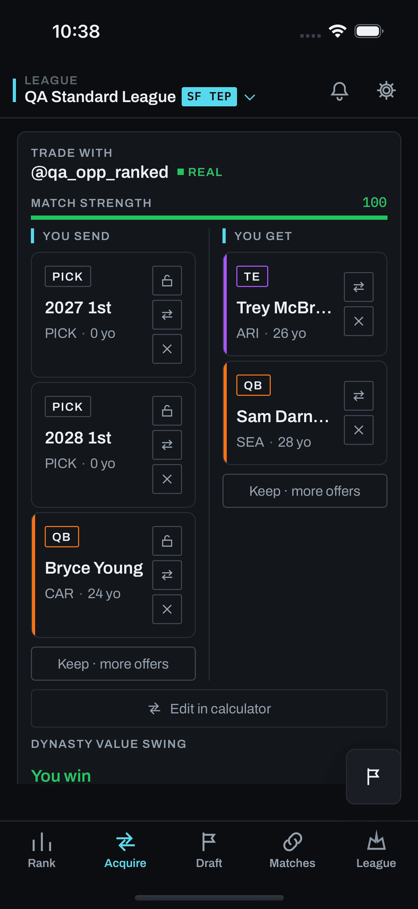

What this is. The first build of fit-first copy (feat/fit-first-copy, dark) puts at most one sentence per side under the card header, for example "Upgrades their WR group with Eli Brandt.", and shows nothing when the engine's proof has no specific reason. You asked for a line for both teams, with each team's league rank at the position, or simply ranks before and after. This page draws three versions on the same four made-up trades, row by row: 1 sentence plus league rank, 2 ranks only, 3 a combined version.
What "rank" means on every frame. A team's league rank at a position by the summed consensus value of its players there. That is the number League rankings, Home's position tiles and Team Review already show, so two screens never disagree (section 05 gives the reasons). It is a dynasty-value rank, not a this-week lineup rank, and trade 1 shows what that costs.
Recommendation and open questions
Recommend Version 3Recommendation: Version 3. It is the only version that is honest about losses and still gives a reason. Version 1 reads well but tells only the flattering half: in trades 2, 3 and 4 it leaves out the position a team pays from. Version 2 is honest, but in trades 1 and 3 it shows you only losses, because the reason you would make the trade (a win-now veteran, a 1st) does not appear in a position rank. Version 3 puts one reason over the full rank movement. In trade 4 its block for the other team has no praise, so you can see before sending that they will probably say no.
Open questions for you
- Which version? 1, 2, 3, or keep the first build's single optional line.
- Rank by total position value, the number League rankings, Home and Team Review show? The cost is that a win-now trade, youth for production, can lower your rank (trade 1). The alternative is starters-only value, which League rankings shows only behind its Starters filter.
- Treat a rank change as noise when the team's value at that position moves by less than 5% of the league median there? The 5% is a starting value to grade, not a measured one.
- Ordinals ("9th → 7th") or League rankings' own "9/12" form? The frames use ordinals because a "/12" twice per move gets long at 375 px.
- Ties: should tied teams share a rank, as League rankings' rank chip does? Home and Team Review break ties by list order today, so the three surfaces can differ by one place on an exact tie.
- Should the engine still serve a card like trade 4, where the honest copy shows the other team only losing? The engine may have found the trade because of the other manager's own rankings, which the card must never reveal.
- The other team's block stays first in every version, as in the first build. Keep that?
Before — today's suggestion card
real capture, 2026-08-10 buildThis is the real capture screens/mobile/trades/populated.png (captured 2026-08-10, listed in screens/manifest.json). The screen library has been frozen since 2026-08-11 (D-056). Since then TradesScreen.tsx has had 57 commits and TradeCard.tsx 16, so the capture shows that build, not today's app. Every proposed frame below is a hand-drawn reconstruction in Chalkline tokens, labelled as one. The fit block sits where the first build put its lines: under "Trade with", above the player sides and the value bar.
Capture · suggestion card

No fit copy. The value bar is the card's verdict.
Rows 1–4. Each row is one trade, with the three versions side by side. "Them" is the other manager, whose block comes first; "You" is the sender.
Clear two-way fit
made-up teams and playersYou are contending (declared). You send a young WR to Harbor Hounds, whose roster reads as rebuilding, for an older, productive WR.
Reconstruction · Version 1 · sentence + league rank
Fits their rebuild-leaning roster: they add Eli Brandt, a 23-year-old WR. They rank 9th of 12 at WR.
Fits your win-now plan: you add Marcus Hale, a 29-year-old WR. You rank 3rd of 12 at WR.
Reconstruction · Version 2 · ranks only
Reconstruction · Version 3 · combined
Both sides have a plan reason. Position value is a dynasty measure, and Brandt is worth more on the market than Hale, so your WR rank drops a place even though your lineup gets older and better now. Version 1 hides that drop. Version 2 shows only the drop, with no reason. Version 3 shows the reason and the drop together.
Positional swap
made-up teams and playersYou send a WR to Northside Nine (no outlook known) and get an RB plus their 2026 2nd.
Reconstruction · Version 1 · sentence + league rank
Upgrades their WR group with Dante Okafor. They rank 10th of 12 at WR.
Upgrades your RB group with Jaylen Pruitt. You rank 8th of 12 at RB.
Reconstruction · Version 2 · ranks only
Reconstruction · Version 3 · combined
Each team improves where it is short and pays from where it is deep. Version 1 tells only the good half. Versions 2 and 3 show the cost on both sides. This is the busiest case (two positions per team), so it is the one used for the 375 × 667 fit check in Version 3.
Players for a pick
made-up teams and playersYou are rebuilding (declared). You send two veterans to Ridge Runners, whose roster reads as contending, for their 2027 1st.
Reconstruction · Version 1 · sentence + league rank
Upgrades their TE group with Royce Ambler. They rank 9th of 12 at TE.
Fits your rebuild: you add draft pick 2027 1st. You rank 5th of 12 overall.
Reconstruction · Version 2 · ranks only
Reconstruction · Version 3 · combined
A pick has no position, so it has no position rank. Version 1 has to fall back to your overall rank, which is a different number from every other line on the page. Version 2 shows you only losses, because the thing you get does not appear. Version 3 names the pick in the lead and shows what it costs you.
Weak case
made-up teams and playersYou send a WR to Bayside Bucks (no outlook known) for an RB. Their WR rank moves only on a sliver of value, and they get worse at RB, the position they give from.
Reconstruction · Version 1 · sentence + league rank
Their WR group barely changes with Tomas Reyes. They rank 6th of 12 at WR.
Upgrades your RB group with Kenji Oduya. You rank 10th of 12 at RB.
Reconstruction · Version 2 · ranks only
Reconstruction · Version 3 · combined
Their WR rank technically goes 6th → 5th, but their WR value rises by 2% of the league's median WR value, under the proposed 5% bar, so every version treats it as unchanged. Version 1's "always both" rule forces a sentence where the engine has no reason, and that sentence hides their RB loss. Version 2 says "no real change" and shows the loss. Version 3 gives them no praise: it says what moves and shows the loss, which tells you before you send that they will probably say no.
Version 1 — sentence plus league rank
What it communicates well
The reason, in words a casual player reads fastest, anchored in one fact: where that team stands today. It reuses the first build's templates (plan, need, surplus) and adds a rank clause.
Thin context
With no outlook known for the other team there is no plan sentence, so the need sentence carries it. When the engine has no reason at all (trade 4) the "always both" rule needs a new fallback sentence, which is the generic copy your condition rules out. With fewer than three valued teams the rank clause has to drop.
What it risks
Boilerplate. "Upgrades their X group with Y" would sit on most cards and soon go unread. A one-sided picture. It names a gain and never the cost: the WR you give up in trade 2, the RB they give up in trade 4. A rank that is not a change. "They rank 9th" says where they stand, not that the trade moves them, so readers will assume a gain. Picks. A pick has no position, so trade 3 falls back to overall rank, a different number again. It is also the longest: up to four lines at 375 px.
Version 2 — ranks only
Layout chosen: two labelled rows
One row per team, theirs first, with the team name on the left and its moves stacked on the right in mono. Chips were rejected because bordered chips look tappable, and ice is reserved for actions. A two-column grid was rejected because the teams often touch different numbers of positions, which leaves empty cells. Rows read like the card's own You send / You get sides.
What it communicates well
Losses as plainly as gains, with no claim to argue with. The numbers are the ones League rankings shows. It has nothing to go stale and no template to bump.
Thin context
It degrades least: ranks need only rosters and consensus values, which every linked league has. Players outside the value pool count as zero, as on League rankings. Hide the block with fewer than three valued teams, which is Home's existing rule.
What it risks
Unreadable to a casual player. "RB 2nd → 4th" with no reason looks like a bad trade for them. The reason is missing. In trade 1 the contender sees only a WR drop, and in trade 3 the rebuilder sees only losses, because a win-now veteran or a pick is not a position gain. Small moves look big. A one-place change looks as meaningful as a five-place one, so the noise rule (question 3) is not optional here.
Version 3 — combined
RecommendedReconstruction · Version 3 at 375 × 667 (iPhone SE height)
Value bar bottom: measuring…
The rule
- Lead phrase: the single strongest reason, chosen in the first build's order (plan, then position need), in a short form: "Rebuilding: adds their 2027 1st", "Upgrades RB: adds Jaylen Pruitt". "Rebuilding" and "Win-now" are used only for an outlook the manager declared; an outlook the engine read from the roster says "Rebuild-leaning". Never "good fit".
- No gain, no praise: a side with no reason gets "Gets X, gives Y" in dim text (trade 4).
- Ranks: every position the trade touches for that team, gains and losses, "WR 9th → 7th". Unchanged and noise-level moves are omitted.
- Theirs first, two lines per side at most, ranks in Plex Mono, direction by arrow and numbers only, no colour.
Fit at 375 × 667
The left frame draws trade 2, the busiest case, on a 375 × 667 screen with the Trades header, card, Pass / Like and tab bar. The block adds a label and four lines: 118 px in this drawing. The readout under the frame is measured live in this drawing. It is a reconstruction, so treat the margin as an estimate, not a measurement of the app.
Where this departs from the direction, and why
- One shared label row, "League rank · position value", above both blocks. Without it, trade 1's "WR 3rd → 4th" under "Win-now: adds Marcus Hale" reads as a contradiction. It is one line per card, not per side.
- Noise counts as unchanged. A one-place move on a sliver of value is omitted like a non-move, which extends "omit unchanged" to cover the risk you named.
- Picks get no rank. A pick has no position, so it appears only in the lead ("adds their 2027 1st"). A side whose only move is a pick has a one-line block.
- Lead phrases are truncated, not wrapped, to hold the two-line limit. The longest here (trade 2, yours) fits at 375 px. A longer name would end in an ellipsis rather than add a third line.
Thin context
The lead falls back from plan, to position gain, to "Gets X, gives Y". Ranks still show. With fewer than three valued teams the rank rows hide, and with no lead either the block disappears and the card is today's card.
What it risks
Two things to read instead of one. The lead is still a template family and needs its own FIT_TMPL_VERSION bump. An inferred "Rebuild-leaning" can be wrong about a manager. And "WR 3rd → 4th" under a win-now reason still needs the label to make sense.
What it would take
read from origin/main + feat/fit-first-copyWhat exists today
| Source | What it has | Position rank across the league? |
|---|---|---|
backend/power_rankings.py compute_power_rankings | Every team in the league, with positions[QB|RB|WR|TE].value (summed consensus value of every rostered player there), picks separately, and a derived starters list. | The inputs, yes; the rank itself is computed by each client. |
mobile/src/screens/LeagueSummaryScreen.tsx (League rankings), teamPosRank | The "9/12" rank chip on each drill-in position header: 1 + the number of teams with strictly more value, so ties share a rank. Coloured by league third. Consensus basis by default; All, Starters and Bench filters. | Yes, shown to users. |
mobile/src/utils/positionSplit.ts (Home's position tiles) | "2nd at RB · Seller" from the same values. Ties broken by user id. Consensus basis. | Yes, shown to users. |
backend/team_review.py _pos_share | Your rank at each position from the same per-team sums. Ties broken by sort order. | Yes, yours only. |
Bilateral proof, trade_gen_owner.py _lineup | usable_depth_before / _delta per position, for the two teams in the trade only: market value scaled for age now, of the players the lineup slots would hold, plus 15% of the best backup. Injured players are excluded. Shown nowhere. | No: two teams, not twelve. |
First build, trade_narrative.fit_lines | The plan, need and surplus sentences, gated on the proof. | No ranks at all. |
Where before and after ranks would come from
From the consensus-basis power rankings. Take every team's positions[P].value, move the traded players' consensus values between the two teams, and rank again. The other ten teams do not change, so it is a small, pure computation (a new function beside fit_lines). The one missing piece is data at serialization time: trade_card_to_dict has the two-team proof but no league-wide values. The ranks should be frozen with the card when it is generated, the way the proof is, so a card does not change under the user as rosters move. Picks have no position and are left out of position ranks.
Which "rank": total position value
Total position value on the consensus basis, the All view of League rankings. It is the only measure the app already shows on three screens (League rankings, Home, Team Review), so a card that says "WR 9th" will match what the user sees one tap away. Usable depth is the engine's better measure of lineup impact, but users see it nowhere: ranking by it would put "WR 4th" on a card while League rankings says 6th. Starters-only value exists, but only behind a filter. The cost is that this rank measures dynasty value, so a win-now trade (youth for production) can lower your rank, as in trade 1. The lead phrase in Version 3 carries that reason, and the label row says what the rank measures. Never use the personal basis here: it disagrees with the default screens.
Ties and small differences
- Ties share a rank (1 + teams strictly above), the rule League rankings' chip already uses. Home and Team Review break exact ties by list order, so they can differ from the chip by one place today. Exact float ties are rare, but question 5 asks whether to align them.
- The noise rule: show a rank change only when the team's value at that position moves by at least 5% of the league median there. The server already computes those medians for League rankings (
server.py_position_medians). Below the bar, the position counts as unchanged: Version 1 says nothing, Version 2 says "no real change" and Version 3 leaves it out. - Fewer than three valued teams: hide all ranks. This is Home's
MIN_SPLIT_TEAMSrule.
Does a league-mate's position rank reveal anything new?
No, on the consensus basis. League rankings already lists every team with its consensus position values and roster, and its drill-in shows each team's rank at each position. /api/league/rank-chip is deliberately open for the same reason: it is built from league-shared consensus values and exposes nothing from anyone's rankings. The before rank is on screen today, and the after rank is arithmetic on public data. It would leak if computed from the other manager's own board (the counterparty's personal values), or from their benefits, intent or preferences, which the first build already refuses to read. The plan lead may name only an outlook the engine inferred from their roster, never one they declared, as in the first build.
What each version needs beyond the first build
| Version | Backend | App |
|---|---|---|
| 1 | Today's rank per side (the before half of the above); a fallback sentence for sides where no template fires, plus overall rank for pick-only sides; template version bump. | The first build's block, always two lines. |
| 2 | Before and after ranks for every touched position, both teams, with the noise rule. No sentences. | A new rank block in place of the first build's lines; wire type and normalizer for a new key. |
| 3 | Both: ranks as in 2, plus a short lead-phrase table derived from the first build's plan and need triggers, a "moves only" fallback, and a template version bump. | The first build's block slot, with a label row and two lines per side. |
Comments live only in this browser's localStorage until you export. Export produces a Markdown file (and copies it to the clipboard). Every team, player, rank and value on this page is made up for illustration, not computed by the engine. Proposed frames are reconstructions, not captures.